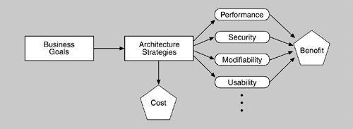

| [ Team LiB ] |
|
12.1 Decision-Making ContextThe software architect or decision maker wishes to maximize the difference between the benefit derived from the system and the cost of implementing the design. The CBAM begins where the ATAM concludes and, in fact, depends upon the artifacts that the ATAM produces as output. Figure 12.1 depicts the context for the CBAM. Figure 12.1. Context for the CBAM Because architectural strategies have technical and economic implications, the business goals of a software system should influence the strategies used by software architects or designers. The direct economic implication is the cost of implementing the system. The technical implications are the characteristics of the system—namely, the quality attributes. In turn the quality attributes have economic implications because of the benefits that can be derived. Recall that when an ATAM has been applied to a software system, we have as a result a set of artifacts documented on completion. They are:
The ATAM identifies the set of key architectural decisions relevant to the quality attribute scenarios elicited from the stakeholders. These decisions result in some specific quality attribute responses—namely, particular levels of availability, performance, security, usability, modifiability, and so forth. But each architectural decision also has associated costs. For example, using redundant hardware to achieve a desired level of availability has a cost; checkpointing to a disk file has a different cost. Furthermore, both of these architectural decisions will result in (presumably different) measurable levels of availability that will have some value to the organization developing the system. Perhaps the organization believes that its stakeholders will pay more for a highly available system (a telephone switch or medical monitoring software, for example) or that it will be sued if the system fails (for example, the software that controls anti-lock brakes in an automobile). The ATAM uncovers the architectural decisions made in the system and links them to business goals and quality attribute response measures. The CBAM builds on this base by eliciting the costs and benefits associated with these decisions. Given this information, the stakeholders can then decide whether to use redundant hardware, checkpointing, or some other tactic to achieve the system's desired availability. Or they can choose to invest their finite resources in some other quality attribute—perhaps believing that higher performance will have a better benefit-to-cost ratio. A system always has a limited budget for creation or upgrade, so every architectural choice is, in some sense, competing with every other one for inclusion. The CBAM does not make decisions for the stakeholders, just as a financial advisor does not tell you how to invest your money. It simply aids in the elicitation and documentation of the costs, benefits, and uncertainty of a "portfolio" of architectural investments and gives the stakeholders a framework within which they can apply a rational decision-making process that suits their needs and their risk aversion. To briefly summarize, the idea behind the CBAM is that architectural strategies (a collection of architectural tactics) affect the quality attributes of the system and these in turn provide system stakeholders with some benefit. We refer to this benefit as utility. Each architectural strategy provides a specific level of utility to the stakeholders. Each also has cost and takes time to implement. Given this information, the CBAM can aid the stakeholders in choosing architectural strategies based on their return on investment (ROI)—the ratio of benefit to cost. |
| [ Team LiB ] |
|